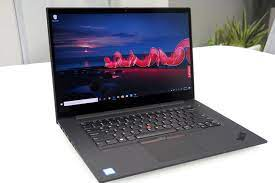
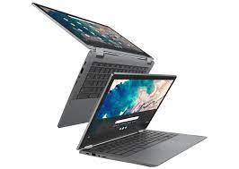
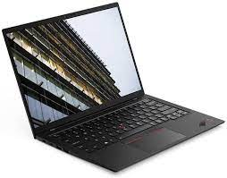
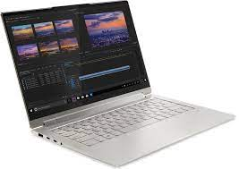
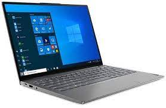

Lenovo ThinkPad X1 Extreme Gen 3
La cantidad de memoria RAM para este modelo varía de 8 a 32 GB según tus necesidades,
y aunque el disco duro comienza con 256 GB de almacenamiento SSD, puede subir fácilmente
a 4 TB si prefieres toneladas de espacio para guardar toda la información que consideras más importante.
La computadora portátil también incluye GPU GeForce GTX 1650 Ti para una ventaja
gráfica que podría convertir el modelo en una máquina de juegos muy eficiente.
Los puertos incluyen Thunderbolt 3/USB-C 3.2, USB-A 3.2 y HDMI 2.0.
|

Lenovo IdeaPad Flex 5
El diseño 2-en-1 de la IdeaPad Flex 5 hace que sea fácil de llevar a cualquier lugar,
una opción inteligente para la escuela, el trabajo de pequeñas empresas y tareas similares.
En el interior, el modelo base comienza con un procesador AMD Ryzen 3 5300U
(actualizable a través de Ryzen 7), 8 GB de RAM y un SSD PCIe de 256 GB.
El lector de huellas dactilares integrado ayuda con la seguridad, mientras que el
obturador de la cámara web integrada ofrece protección de privacidad entre videoconferencias.
Las conexiones incluyen USB-A 3.2 y USB-C 3.2, así como HDMI 1.4b, además de compatibilidad con Wifi 6 para redes inalámbricas.
|

Lenovo ThinkPad X1 Carbon Gen 9
La versión actual de la ThinkPad X1 Carbon Gen 9 ofrece un procesador Intel de 11ª
generación de cuatro núcleos, comenzando con un modelo i5, pero actualizable a un i7,
además de 8 a 16 GB de RAM y de 256 GB a 1 TB de almacenamiento SSD PCIe.
También puedes actualizar la pantalla a un modelo UHD si prefieres mejores imágenes.
Admite Wifi 6 e incluye las conexiones más recientes, como puertos Thunderbolt 4/USB-C,
para obtener las mejores velocidades por cable que puedas obtener.
|

Lenovo Yoga 9i 15
La gran pantalla de 15 pulgadas ofrece mucho espacio para trabajos demandantes,
y el procesador Intel Core i9-10980HK de 10ª generación de ocho núcleos y 16 GB de RAM,
te ayudarán a utilizar cualquier software que puedas necesitar por cuestiones de trabajo, o entretenimiento.
Hablando de entretenimiento, la Lenovo Yoga 9i 15 también viene con una GPU
GeForce GTX 1650 Ti, por lo que es posible usar la 2-en-1 para juegos más avanzados durante el tiempo de inactividad.
|

Lenovo ThinkBook 13s Gen 2
Está actualizada con especificaciones modernas, lo que la convierte en una excelente
opción para la escuela secundaria o la universidad. El modelo base comienza con
un procesador Intel Core i5-1135G7 de 11ª generación, 16 GB de RAM y un SSD PCIe de 512 GB.
También descubrimos que la duración de la batería era impresionante en esta ThinkBook 13s Gen 2,
y las características de seguridad como el lector de huellas dactilares fácil agregaban mucho valor.
|
Lenovo ThinkPad X1 Titanium Yoga
A pesar del tamaño compacto, esta Yoga tiene mucha potencia, con el modelo de entrada
que ofrece un procesador Intel i5-1130G7 de cuatro núcleos de 11ª generación que se
puede actualizar a opciones más potentes si es necesario. La base de 8 GB de RAM y la
unidad de estado sólido PCIe de 256 GB también se pueden cambiar.
Dado que los modelos Yoga están diseñados para usarse en movimiento,
es bueno ver que este modelo incluye un Lenovo Precision Pen y, al mismo tiempo,
ofrece funciones de laptop empresarial más tradicionales, como un lector de huellas dactilares para mayor seguridad.
|